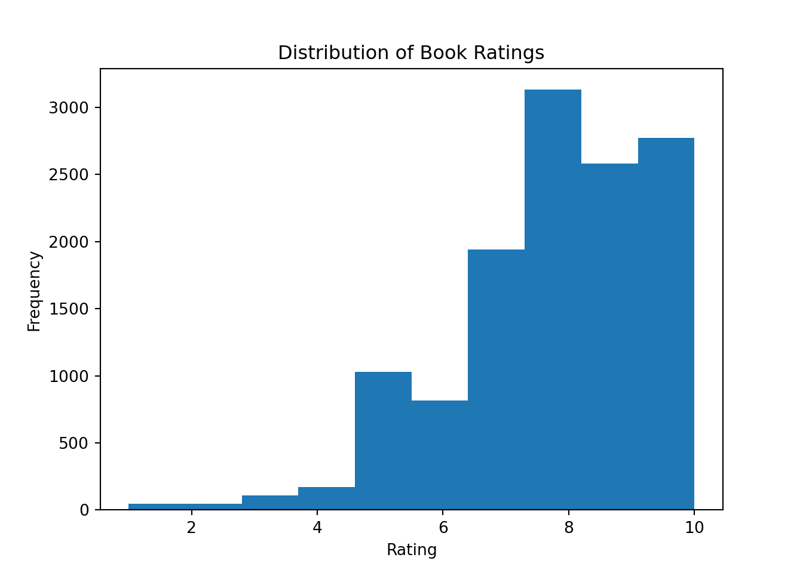
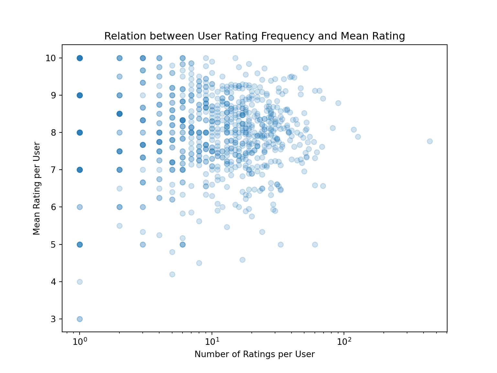
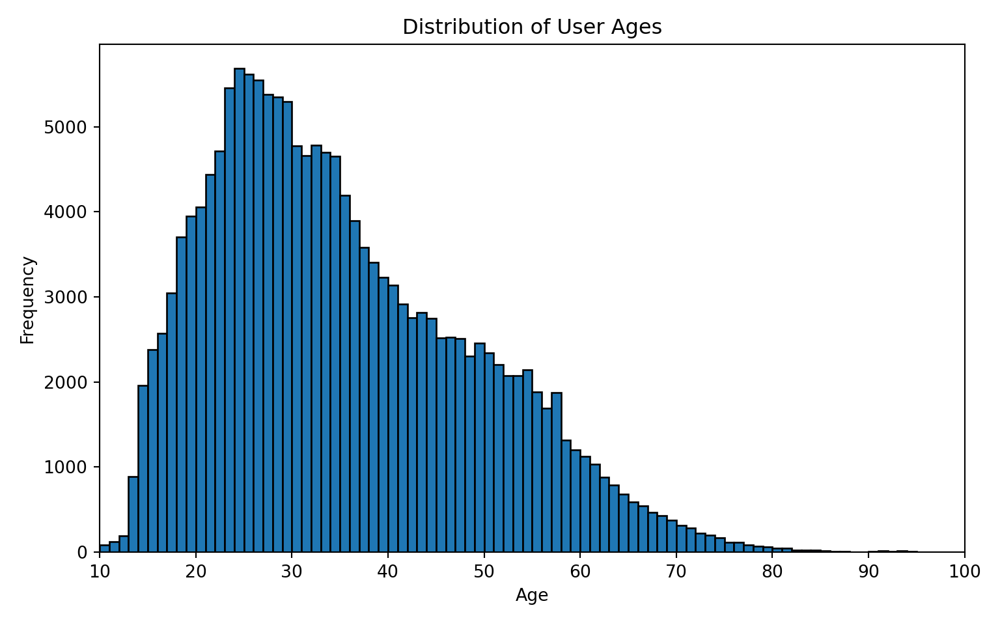

library(reticulate)
use_condaenv("ds-env", required = TRUE)Recommender Systems: Books Recommendations
Introduction
In the period when digital content is abundant, helping readers find books that match their interests has become more and more important. This project aims to build a book recommendation system through collaborative filtering techniques, based on a dataset sourced from Kaggle. The goal is to create a system that provides personalized and unbiased book suggestions to users. Our approach combines several methods within collaborative filtering. The first strategy focuses on analyzing user information to identify similar readers and recommend books they have highly rated; the second method calculates the similarity between books based on ratings, allowing us to suggest books that are similar to those a user already enjoys. Additionally, we develop a system that can generate customized recommendations based on the user ID. With these techniques, this project gives helpful suggestions catering to individual reading tastes.
Data Description
Book recommendation dataset from kaggle: http://www.kaggle.com/datasets/arashnic/book-recommendation-dataset
The Book-Crossing dataset comprises 3 files.
- Users:
Contains the users. Note that user IDs (User-ID) have been anonymized and map to integers. Demographic data is provided (Location, Age) if available. Otherwise, these fields contain NULL-values. - Books:
Books are identified by their respective ISBN. Invalid ISBNs have already been removed from the dataset. Moreover, some content-based information is given (Book-Title, Book-Author, Year-Of-Publication, Publisher), obtained from Amazon Web Services. Note that in case of several authors, only the first is provided. URLs linking to cover images are also given, appearing in three different flavours (Image-URL-S, Image-URL-M, Image-URL-L), i.e., small, medium, large. These URLs point to the Amazon website. - Ratings:
Contains the book rating information. Ratings (Book-Rating) are either explicit, expressed on a scale from 1-10 (higher values denoting higher appreciation), or implicit, expressed by 0.
The dataset is from the site https://www.bookcrossing.com/howto.
Collected by Cai-Nicolas Ziegler in a 4-week crawl (August / September 2004) from the Book-Crossing community with kind permission from Ron Hornbaker, CTO of Humankind Systems. Contains 278,858 users (anonymized but with demographic information) providing 1,149,780 ratings (explicit / implicit) about 271,379 books. I [dataset uploader, Möbius] preprocessed and cleaned data format.
Books.csv has 271360 observations and 8 variables. Predictors include Book-Author, Year-of-Publication, and Publisher.
Ratings.csv has 1,149,780 observations and 3 variables. Predictors include Book-Rating.
Users.csv has 278,858 observations and 3 variables. Predictors include Location and Age.
There are primary and foreign keys in the csv files so the different tables can reference each other. These include User-ID and ISBN.
We will likely be working with Book-Rating, Location, Book-Author, Year-of-Publication, and Publisher (along with User-ID and ISBN) to build our recommendation system.
There are 110762 missing values for Age, and 2-3 missing values for some other variables. This means about 40% of Age is missing. Since there is so much, we will likely drop this variable altogether. The other variables (Book-Author, Publisher) have a negligible number of missing values, and dropping the rows should not affect the overall dataset much, so that’s what we’ll likely do.
Methodology
Background Information
There are two types of recommendation systems:
- Content-based systems, which would recommend books based on the books the user liked in the past
- Collaborative-based systems, which recommend books based on what similar users liked
We focused on collaborative-based systems to leverage our Users and Ratings datasets to the fullest extent.
Our models use cosine similarity as a metric for the distance between vectors. The formula is \(\cos(\theta)=\frac{A\cdot B}{\vert\vert A \vert\vert \: \vert\vert B \vert\vert}\). This helps us judge the similarities between users.
We also used a k-Nearest Neighbors, which identifies books that are most similar to a given title based on patterns in user ratings, and recommends them by finding the closest matches using cosine similarity in a high-dimensional rating space.
Project Steps
In this project, we began by loading the Books, Ratings, and Users datasets. Then we clean the data: dropping lacking metadata and filtering out users with fewer than 200 ratings, as well as books rated by fewer than 100 users. We then do the exploratory data analysis, plotting the distribution of ratings, the relationship between the number of ratings per user and their average rating, and visualizing the age distribution for users to identify key demographic trends. Next, we have three collaborative filtering methods:
1. Location & Age–Based Collaborative Filtering
First, we filter the user table to include only users whose “Location” field (converted to lowercase) contains a given input text(e.g., “new york”) and who have non-missing ages. Next, we compute the absolute difference between each user’s age and the target age, selecting the n users with the smallest age difference. From this list of nearest‐age, same‐location users, we aggregate their ratings by ISBN, computing the mean rating for each book.(important for books that appear several times) Finally, we return the top N books, providing a recommendation list that reflects local tastes among similarly aged readers.
2. Item‐Based k-Nearest Neighbors Collaborative Filtering
Here, we pivot the cleaned ratings data into a book×user matrix (rows = book titles, columns = user IDs), filling missing entries with zeros. Using scikit-learn’s NearestNeighbors with cosine distance and the “brute” algorithm, we fit the model on the matrix. For any given book, we will retrieve its row vector and query the model for its k nearest neighbors (including itself). The algorithm will return the cosine distances and indices of the closest books; we remove the query book itself and then list the next k – 1 titles with the smallest distance, which are the most similarly rated books across the user base.
3. User‐Based Weighted Collaborative Filtering
This method builds a sparse user×book rating matrix, mapping each unique user‐ID and ISBN to integer indices. We will extract the target user rating vector and compute cosine similarities against every other user’s vector, zeroing out the self‐similarity to avoid trivial matches. We then select the top M most similar users (neighbors) and, for each book, calculate their weighted average rating. After computing all items, we exclude any books the target user has already rated and select the top N books by predicted score. Finally, we map these ISBNs back to titles for the recommendation list.
Data Loading & Data Cleaning
Here we load the data.
import matplotlib.pyplot as plt
import numpy as np
import pandas as pd
import re
import random
from scipy.sparse import csr_matrix
from sklearn.neighbors import NearestNeighbors
from sklearn.metrics.pairwise import cosine_similarity
from typing import List
Users = pd.read_csv('data/Users.csv')
Books = pd.read_csv('data/Books.csv', low_memory=False)
Ratings = pd.read_csv('data/Ratings.csv')
Books.head() ISBN ... Image-URL-L
0 0195153448 ... http://images.amazon.com/images/P/0195153448.0...
1 0002005018 ... http://images.amazon.com/images/P/0002005018.0...
2 0060973129 ... http://images.amazon.com/images/P/0060973129.0...
3 0374157065 ... http://images.amazon.com/images/P/0374157065.0...
4 0393045218 ... http://images.amazon.com/images/P/0393045218.0...
[5 rows x 8 columns]Ratings.head() User-ID ISBN Book-Rating
0 276725 034545104X 0
1 276726 0155061224 5
2 276727 0446520802 0
3 276729 052165615X 3
4 276729 0521795028 6Users.head() User-ID Location Age
0 1 nyc, new york, usa NaN
1 2 stockton, california, usa 18.0
2 3 moscow, yukon territory, russia NaN
3 4 porto, v.n.gaia, portugal 17.0
4 5 farnborough, hants, united kingdom NaN# null values for 3 datasets
Books.isnull().sum()ISBN 0
Book-Title 0
Book-Author 2
Year-Of-Publication 0
Publisher 2
Image-URL-S 0
Image-URL-M 0
Image-URL-L 3
dtype: int64Ratings.isnull().sum()User-ID 0
ISBN 0
Book-Rating 0
dtype: int64Users.isnull().sum()User-ID 0
Location 0
Age 110762
dtype: int64# dropping the missing-value observation in the Books datasets
Books.dropna(inplace = True)
Books.isnull().sum()ISBN 0
Book-Title 0
Book-Author 0
Year-Of-Publication 0
Publisher 0
Image-URL-S 0
Image-URL-M 0
Image-URL-L 0
dtype: int64# remove the users who rated less than 200 books
ratings = Ratings['User-ID'].value_counts()
ratings.sort_values(ascending=False).head()User-ID
11676 13602
198711 7550
153662 6109
98391 5891
35859 5850
Name: count, dtype: int64len(ratings[ratings < 200])104378Ratings_rm = Ratings[
~Ratings['User-ID'].isin(ratings[ratings < 200].index)
]
Ratings_rm.shape(527556, 3)# remove the books which was rated by less than 100 users
ratings = Ratings['ISBN'].value_counts()
ratings.sort_values(ascending=False).head()ISBN
0971880107 2502
0316666343 1295
0385504209 883
0060928336 732
0312195516 723
Name: count, dtype: int64len(ratings[ratings < 100])339825Ratings_rm = Ratings_rm[
~Ratings_rm['ISBN'].isin(ratings[ratings < 100].index)
]
Ratings_rm.shape(49781, 3)Ratings_rm User-ID ISBN Book-Rating
1456 277427 002542730X 10
1469 277427 0060930535 0
1471 277427 0060934417 0
1474 277427 0061009059 9
1484 277427 0140067477 0
... ... ... ...
1147304 275970 0804111359 0
1147436 275970 140003065X 0
1147439 275970 1400031346 0
1147440 275970 1400031354 0
1147441 275970 1400031362 0
[49781 rows x 3 columns]EDA
Let’s take a look at the distribution of our data.
rating_dist_filter = Ratings_rm[Ratings_rm['Book-Rating'] >0]
plt.hist(rating_dist_filter['Book-Rating'])
plt.title('Distribution of Book Ratings')
plt.xlabel('Rating')
plt.ylabel('Frequency')
plt.show()
We found that most of website users tend to give a high score to the books. This might be because people rarely finish reading books they don’t like and then provide any evaluations. For this part, the model based on high evaluation books may be more reliable.
user_stats = rating_dist_filter.groupby('User-ID')['Book-Rating'].agg(
['count', 'mean']).reset_index()
plt.figure(figsize=(8, 6))
plt.scatter(user_stats['count'], user_stats['mean'], alpha=0.2)
plt.xscale('log')
plt.xlabel('Number of Ratings per User')
plt.ylabel('Mean Rating per User')
plt.title('Relation between User Rating Frequency and Mean Rating')
plt.show()
corr = user_stats['count'].corr(user_stats['mean'])
print(f'Pearson correlation between rating count and mean rating: {corr:.3f}')Pearson correlation between rating count and mean rating: -0.019ages = Users['Age'].dropna().astype(int)
ages = ages[(ages >= 10) & (ages <= 100)]
bins = range(10, 101 + 1)
# Plot the age distribution
plt.figure(figsize=(8, 5))
plt.hist(ages, bins=bins, edgecolor='black')
plt.xlim(10, 100)(10.0, 100.0)plt.xticks(range(10, 101, 10))([<matplotlib.axis.XTick object at 0x30a3c5b80>, <matplotlib.axis.XTick object at 0x3063a2e10>, <matplotlib.axis.XTick object at 0x30631bb00>, <matplotlib.axis.XTick object at 0x30a532f00>, <matplotlib.axis.XTick object at 0x30a531670>, <matplotlib.axis.XTick object at 0x30a533800>, <matplotlib.axis.XTick object at 0x30a533560>, <matplotlib.axis.XTick object at 0x30a5486e0>, <matplotlib.axis.XTick object at 0x30a549070>, <matplotlib.axis.XTick object at 0x30a549af0>], [Text(10, 0, '10'), Text(20, 0, '20'), Text(30, 0, '30'), Text(40, 0, '40'), Text(50, 0, '50'), Text(60, 0, '60'), Text(70, 0, '70'), Text(80, 0, '80'), Text(90, 0, '90'), Text(100, 0, '100')])plt.title('Distribution of User Ages')
plt.xlabel('Age')
plt.ylabel('Frequency')
plt.tight_layout()
plt.show()
Most website users are between 20 to 40 years old. The system based on the datasets may be more effective for users in this range.
Model Fitting and Results
Collaborative Filtering
We filter the Users dataframe to only keep the users that appear in the Ratings dataset.
# filtered User data
def find_userid_col(df):
for col in df.columns:
c = col.lower()
if "user" in c and "id" in c:
return col
raise ValueError("Could not detect a user-ID column—please specify it manually.")
uid_ratings_col = find_userid_col(Ratings_rm)
uid_users_col = find_userid_col(Users)
valid_ids = set(Ratings_rm[uid_ratings_col].dropna().unique())
df_users_filtered = Users[Users[uid_users_col].isin(valid_ids)].copy()
df_users_filtered User-ID Location Age
253 254 minneapolis, minnesota, usa 24.0
2275 2276 niskayuna, new york, usa 46.0
2765 2766 frisco, texas, usa 42.0
2976 2977 richland, washington, usa 25.0
3362 3363 knoxville, tennessee, usa 29.0
... ... ... ...
275969 275970 pittsburgh, pennsylvania, usa 46.0
277426 277427 gilbert, arizona, usa 48.0
277477 277478 schiedam, zuid-holland, netherlands 31.0
277638 277639 forsyth, montana, usa 48.0
278417 278418 omaha, nebraska, usa NaN
[888 rows x 3 columns]Recommendation System Based on Location and Age
Here we have a collaborative filtering method that uses the user’s age and location to recommend books. Our model filters users by a specified location, then finds n users closest to the specified age. Then we find the average book ratings from these similar users, and return the top few book titles.
def recommend_book_titles(
location_substr: str,
age: int,
n_closest: int = 50,
top_n: int = 10
) -> List[str]:
df_users = Users
df_ratings = Ratings_rm
df_books = Books
need_u = {"User-ID", "Location", "Age"}
need_r = {"User-ID", "ISBN", "Book-Rating"}
need_b = {"ISBN", "Book-Title"}
for need, df, name in [(need_u, df_users, "Users.csv"),
(need_r, df_ratings, "book_rating.csv"),
(need_b, df_books, "book.csv")]:
if not need.issubset(df.columns):
raise ValueError(f"{name} must contain columns {need}")
# Filter users by location
query = location_substr.strip().lower()
df_users = df_users.dropna(subset=["Location"]).copy()
df_users["Location_lower"] = df_users["Location"].str.lower()
users_loc = df_users[df_users["Location_lower"].str.contains(query, na=False)].copy()
if users_loc.empty:
return []
# n_closest users in age
users_loc["Age"] = pd.to_numeric(users_loc["Age"], errors="coerce")
users_loc = users_loc.dropna(subset=["Age"])
users_loc["age_diff"] = (users_loc["Age"] - age).abs()
users_loc = users_loc.nsmallest(n_closest, "age_diff")
nearest_ids = users_loc["User-ID"].astype(str).unique()
if not nearest_ids.size:
return []
# Ratings from those users
df_ratings["User-ID"] = df_ratings["User-ID"].astype(str)
sub_ratings = df_ratings[df_ratings["User-ID"].isin(nearest_ids)]
if sub_ratings.empty:
return []
top_isbns = (
sub_ratings.groupby("ISBN")["Book-Rating"]
.mean()
.sort_values(ascending=False)
.head(top_n)
.index
)
top_titles = (
df_books[df_books["ISBN"].isin(top_isbns)]
.drop_duplicates(subset=["ISBN"])
.set_index("ISBN")
.loc[top_isbns, "Book-Title"]
.fillna("(title unavailable)")
.tolist()
)
return top_titlesHere are 10 book recommendations for a 25-year-old New Yorker.
titles = recommend_book_titles(
location_substr="New York",
age=25,
n_closest=200,
top_n=10
)
for t in titles:
print(t)The Eye of the World (The Wheel of Time, Book 1)
The Five People You Meet in Heaven
Hannibal
Confessions of an Ugly Stepsister : A Novel
Confessions of a Shopaholic (Summer Display Opportunity)
She's Come Undone (Oprah's Book Club (Paperback))
Girl, Interrupted
Cradle and All
Misery
Where the Heart Is (Oprah's Book Club (Paperback))K-Nearest Neighbors Model
Now we build a k-Nearest Neighbors (kNN) recommendation model to suggest similar books based on user ratings.
It first creates a user-item matrix where rows are books and columns are users, filled with book ratings. Then, it trains a kNN model using cosine similarity to measure how alike books are based on user ratings. The get_recommends() function takes a book title and returns the top 5 most similar books (excluding the queried book) based on the learned similarities.
# building User Rating DateFrame with respect to books
df = Ratings_rm.pivot_table(
index=['User-ID'],columns=['ISBN'],values='Book-Rating').fillna(0).T
df.index = df.join(Books.set_index('ISBN'))['Book-Title']
df = df.sort_index()
dfUser-ID 100459 100644 100846 100906 ... 9856 98741 98758 99955
Book-Title ...
1984 0.0 0.0 0.0 0.0 ... 0.0 0.0 0.0 0.0
1st to Die: A Novel 0.0 0.0 0.0 0.0 ... 0.0 0.0 0.0 0.0
1st to Die: A Novel 0.0 0.0 0.0 0.0 ... 0.0 0.0 0.0 0.0
2nd Chance 0.0 0.0 0.0 0.0 ... 0.0 0.0 0.0 0.0
2nd Chance 0.0 0.0 0.0 0.0 ... 0.0 0.0 0.0 0.0
... ... ... ... ... ... ... ... ... ...
\O\" Is for Outlaw" 0.0 0.0 8.0 0.0 ... 0.0 0.0 0.0 0.0
NaN 0.0 0.0 0.0 0.0 ... 0.0 0.0 0.0 0.0
NaN 0.0 0.0 0.0 0.0 ... 0.0 0.0 0.0 0.0
NaN 0.0 0.0 8.0 0.0 ... 10.0 0.0 0.0 0.0
NaN 0.0 0.0 0.0 0.0 ... 0.0 0.0 0.0 0.0
[731 rows x 888 columns]# Nearest Neighbors Model Training
model = NearestNeighbors(metric='cosine', algorithm='brute')
model.fit(df.values)NearestNeighbors(algorithm='brute', metric='cosine')In a Jupyter environment, please rerun this cell to show the HTML representation or trust the notebook.
On GitHub, the HTML representation is unable to render, please try loading this page with nbviewer.org.
NearestNeighbors(algorithm='brute', metric='cosine')
# recommendation function based on Model
def get_recommends(title = ""):
try:
book = df.loc[title]
except KeyError as e:
print('The given book', e, 'does not exist')
return
distance, indice = model.kneighbors([book.values], n_neighbors=6)
recommended_books = pd.DataFrame({
'title' : df.iloc[indice[0]].index.values,
'distance': distance[0]
}) \
.sort_values(by='distance', ascending=True) \
.head(6).values
return recommended_booksbooks = get_recommends("Circle of Friends")
for book in books[1:]:
print(book)['The Glass Lake' 0.5338509479079827]
['Nights in Rodanthe' 0.6678030883177991]
['Gap Creek: The Story Of A Marriage' 0.6825291631729837]
['Skipping Christmas' 0.7158561382316664]
['Echoes' 0.7214503303353683]Recommendation System with User ID Input
Next, we have a different collaborative method that recommends books for a specific user, based on ratings from similar users. The idea is that users that have similar opinions on some books will be more likely share opinions on other books.
Our model calculates the cosine similarity between users, based on the vectors of their respective book ratings. Then, using a k-nearest neighbors algorithm, we weight the ratings of \(k\) of the most similar users, based on exactly how similar the user is. If a user didn’t rate a book, the similarity weight is set to 0 for that book.
From this, we can derive a weighted average rating for each book, which is how much similar users liked it. We remove the books that the target user already rated, and then return the top N titles, which is what our model predicts would have the highest ratings from the target user.
unique_users = Ratings_rm['User-ID'].unique()
unique_books = Ratings_rm['ISBN'].unique()
user_to_index = {user: idx for idx, user in enumerate(unique_users)}
index_to_user = {idx: user for user, idx in user_to_index.items()}
book_to_index = {isbn: idx for idx, isbn in enumerate(unique_books)}
index_to_book = {idx: isbn for isbn, idx in book_to_index.items()}
row_indices = Ratings_rm['User-ID'].map(user_to_index)
col_indices = Ratings_rm['ISBN'].map(book_to_index)
data = Ratings_rm['Book-Rating']
n_users = len(unique_users)
n_books = len(unique_books)
sparse_ratings = csr_matrix((data, (row_indices, col_indices)), shape=(n_users, n_books))def recommend_user_books_weighted(user_id,
top_n_users=10,
top_n_books=10):
if user_id not in user_to_index:
raise ValueError(f"User-ID {user_id} not found.")
target_idx = user_to_index[user_id]
user_vector = sparse_ratings[target_idx]
#cosine similarity for users
sim_scores = cosine_similarity(user_vector, sparse_ratings)[0]
sim_scores[target_idx] = 0 # zero out self
#top N neighbor
top_neighbors = sim_scores.argsort()[::-1][:top_n_users]
# rating vector & similarity value
neighbor_sims = sim_scores[top_neighbors]
neighbor_matrix = sparse_ratings[top_neighbors]
dense_neighbors = neighbor_matrix.toarray()
sim_matrix = np.repeat(
neighbor_sims[:, np.newaxis], repeats=dense_neighbors.shape[1], axis=1)
sim_matrix = np.where(dense_neighbors > 0, sim_matrix, 0.0)
weighted_numer = (sim_matrix * dense_neighbors).sum(axis=0)
weighted_denom = np.where(dense_neighbors > 0, sim_matrix, 0.0).sum(axis=0)
weighted_denom[weighted_denom == 0] = np.nan
weighted_avg = weighted_numer / weighted_denom
weighted_avg = np.nan_to_num(weighted_avg, nan=0.0)
#exclude the target user rated books
target_rated = user_vector.toarray().ravel() > 0
unread_mask = ~pd.Series(target_rated, index=range(weighted_avg.size))
filtered_scores = pd.Series(weighted_avg, index=range(weighted_avg.size))[unread_mask]
#top_n_books
top_books = filtered_scores.nlargest(top_n_books).index
recommended_isbns = [index_to_book[i] for i in top_books]
rec_books = (
Books[['ISBN', 'Book-Title']]
.drop_duplicates()
.set_index('ISBN')
.loc[recommended_isbns]
.reset_index()
)
return rec_booksHere are some recommendations for user 13082.
# these are the user's existing ratings of books
target_user = '13082'
user_ratings = Ratings[
(Ratings['User-ID'].astype(str) == target_user) &
(Ratings['Book-Rating'] > 0)]
user_ratings_with_titles = user_ratings.merge(Books[['ISBN', 'Book-Title']], on='ISBN', how='left')
print("user 13082's book ratings")user 13082's book ratingsuser_ratings_with_titles[['Book-Rating', 'Book-Title']].head() Book-Rating Book-Title
0 5 Rough Justice
1 5 Irreconcilable Differences
2 4 Mick (Lynch, Chris. Blue Eyed Son, #1.)
3 8 Angus, Thongs and Full-Frontal Snogging: Confe...
4 8 NaN# here are the recommendations for this user
recommendations = recommend_user_books_weighted(
user_id=target_user,
top_n_users=10,
top_n_books=10
)
print(f"Top 10 recommendations for user {target_user}:")Top 10 recommendations for user 13082:print(recommendations) ISBN Book-Title
0 0439136369 Harry Potter and the Prisoner of Azkaban (Book 3)
1 002542730X Politically Correct Bedtime Stories: Modern Ta...
2 0316776963 Me Talk Pretty One Day
3 0399501487 Lord of the Flies
4 0380002930 Watership Down
5 0316769487 The Catcher in the Rye
6 0439139597 Harry Potter and the Goblet of Fire (Book 4)
7 0451526341 Animal Farm
8 0786867647 Lucky Man: A Memoir
9 0375506039 Open HouseThe user in question could then use these results, which predict books they’d like, to inform their choice in what to read.
Conclusion
In this project, we demonstrated the development of a book recommendation system using three collaborative filtering approaches: user filtering based on location and age, item-based k-nearest neighbors filtering, and a weighted user-similarity model for personalized recommendations. Through exploratory data analysis, we observed that users tend to give higher ratings overall and that the majority of active readers fall between ages 20 and 40, informing our decision to drop sparse age data and focus on more robust features.
Our location and age‐based model yielded intuitive, locale‐sensitive suggestions (e.g., popular titles among New York readers), while the item‐based kNN approach successfully identified books with similar rating patterns (such as recommending “The Glass Lake” for fans of “Circle of Friends”). The weighted user-similarity method further refined recommendations by emphasizing ratings from the most similar users, resulting in top picks like Harry Potter and the Prisoner of Azkaban and Animal Farm for a sample user.
Despite these successes, limitations remain. High sparsity in user demographics and the absence of explicit item metadata constrained our models. Future work could integrate content-based features (e.g., genres, authorship), apply matrix factorization techniques to mitigate sparsity, and incorporate evaluation metrics (such as precision, recall, and NDCG) to quantitatively benchmark performance. Overall, our collaborative filtering framework lays a solid foundation for a scalable, unbiased book recommendation engine that can be enhanced with richer data and advanced algorithms.